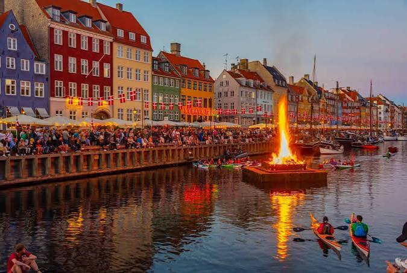
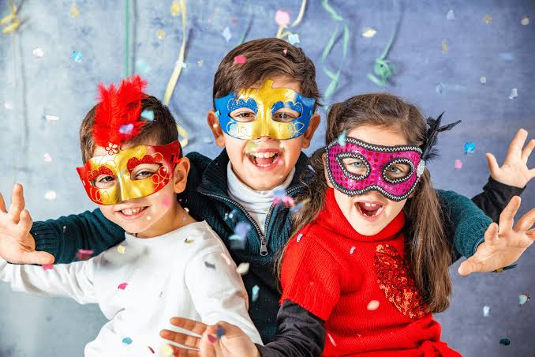
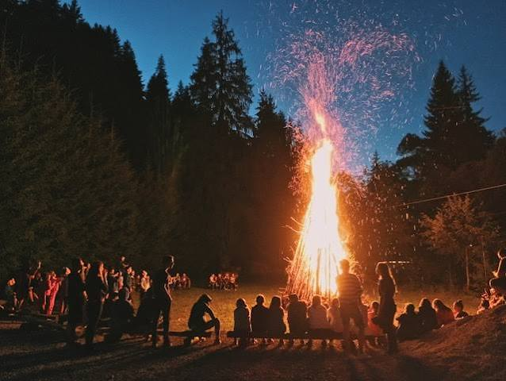

CityLoop Quest Copenhague


À Copenhague, l’année culturelle commence dans le froid mais rarement dans le silence. Le réveillon du Nouvel An remplit Rådhuspladsen de foules et de feux d’artifice, tandis que beaucoup de familles écoutent le discours royal avant de monter sur une chaise et d’en sauter à minuit, geste censé faire entrer littéralement dans la nouvelle année. Cette joie peut devenir très bruyante : les lunettes de protection ne sont pas une plaisanterie dans les rues les plus animées.
Fastelavn, célébré avant le carême, donne lieu à des déguisements et à un jeu où les enfants frappent un tonneau suspendu. Autrefois, un chat vivant pouvait être enfermé dans le tonneau, pratique heureusement disparue. Aujourd’hui, celui qui fait tomber le fond devient “roi des chats”, tandis que les boulangeries rivalisent de fastelavnsboller, brioches ou feuilletés garnis de crème.

Le 23 juin, la Sankt Hans Aften célèbre le solstice autour de feux allumés sur les plages et dans les parcs. Une effigie de sorcière est parfois placée au sommet, tradition tardive liée aux légendes plutôt qu’aux procès historiques. Chants collectifs, couvertures et paniers de pique-nique transforment les rives en salons temporaires face à la lumière presque interminable.

L’automne et l’hiver appartiennent aux lumières. Tivoli se couvre de décors pour Halloween puis Noël, Nyhavn accueille des stands et les maisons allument bougies et étoiles. Le concept de hygge n’est pas une recette touristique unique : il désigne surtout une qualité de présence partagée, obtenue par la lumière, la nourriture, la conversation et l’absence de cérémonie excessive.
Parmi les grands événements contemporains figurent le carnaval de Copenhague, le festival de jazz en juillet, la Copenhagen Pride en août et la Nuit de la Culture en octobre. Chacun utilise la ville différemment : scènes dans les places, concerts dans les cours, musées ouverts tard ou défilé dans les rues. Consultez les dates annuelles, car ces rendez-vous modifient transports, accès et ambiance bien au-delà de leur programme officiel.